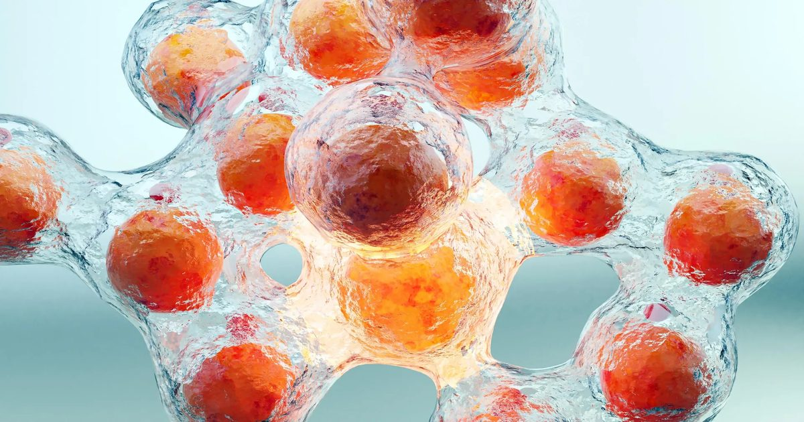

Новая инъекция заставляет жировые клетки самоуничтожаться
Ученые разработали экспериментальную инъекцию, которая уничтожает жировые клетки и значительно уменьшает опасный жир на животе, потенциально открывая новый путь к лечению ожирения.
Ранние исследования также показывают, что это может помочь предотвратить восстановление веса, которое часто следует за прекращением приема популярных препаратов для похудения, таких как Ozempic и Wegovy.